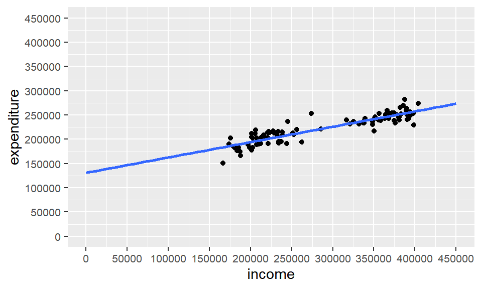

計量経済分析の流れを整理してみました。
計量経済学とは一言でいうと、計量経済学とは、経済理論で得られた関係が現実経済に合うかどうかを調べる（実証する）学問です。 計量経済分析は、必ず、経済理論や何らかの仮説を検証するために行われます。手元にあるデータを闇雲に分析するというやり方は、分析ソフトの使い方を覚えるためには役立つでしょうが、これは計量経済分析とはいえないでしょう。
マクロ経済学の教科書では「所得の一定割合が消費に回る」という説明があると思います。今回は、この経済理論（仮説）が現在の日本経済で当てはまるかどうか、検証してみることにします。データは、総務省「2019年全国家計構造調査」の結果を使用します。
データセットの中身は、次のようになっています。これは、都道府県別の調査結果から、可処分所得と消費支出を抜き出したものです。項目名householdは世帯の類型を表しています。workerは勤労者世帯、unemploymentは無職世帯です。areaは都道府県名です。expenditureは消費支出の額、incomeは可処分所得の額を表します。
tibble(myd)分析に当たっては、使用するデータの特徴を把握することが何より重要です。このため、データを用意したら、初めに基本統計量を求めます。
基本統計量とは、データの基本的な特徴を表す値のことで、代表値と散布度に区分できます。
代表値とはデータを代表する値のことで、平均値、最大値、最小値などがあります。散布度とはデータの散らばり度合いを表す値のことで、分散、標準偏差などがあります。
・代表値（そのデータ全体を表す値）：最小値、最大値、中央値、最頻値、平均値
・散布度（データの散らばりを表す値）：範囲、分散、標準偏差、歪度、尖度
今回取得したデータセットの基本統計量は、次のようになっています。
summary(myd$income)## Min. 1st Qu. Median Mean 3rd Qu. Max.
## 166737 215024 301071 292320 369070 404355summary(myd$expenditure)## Min. 1st Qu. Median Mean 3rd Qu. Max.
## 150907 202679 229983 223596 245806 282620このままでは見づらいので、knitr::kableで表示します。
kable(summary(myd))| household | area | expenditure | income | |
|---|---|---|---|---|
| Length:94 | Length:94 | Min. :150907 | Min. :166737 | |
| Class :character | Class :character | 1st Qu.:202679 | 1st Qu.:215024 | |
| Mode :character | Mode :character | Median :229983 | Median :301071 | |
| NA | NA | Mean :223596 | Mean :292320 | |
| NA | NA | 3rd Qu.:245806 | 3rd Qu.:369070 | |
| NA | NA | Max. :282620 | Max. :404355 |
なお、出力結果の各項目は、それぞれ次のことを表しています。
| 項目 | 意味 |
|---|---|
| Min. | 最小値 |
| 1st. Qu. | 第一四分位 |
| Median | 中央値 |
| Mean | 平均値 |
| 3rd Qu. | 第三四分位 |
| Max. | 最大値 |
次に、分散と標準偏差を求め、データのばらつき具合を確認します。
分散はvar、標準偏差はsdで求められます。
var(myd$income)## [1] 6315016862sd(myd$income)## [1] 79467.08var(myd$expenditure)## [1] 780184845sd(myd$expenditure)## [1] 27931.79これを見ると、消費支出、可処分所得とも、ばらつきが大きくないことが確認できます。
次に、散布図を描いて、2変数の関係を把握します。同時に、外れ値があるかどうかも確認します。
下の散布図は、可処分所得（説明変数）を\(x\)軸に、消費支出（被説明変数）を\(y\)軸にとったものです。
可処分所得と消費支出の関係
この図からは、明確に外れ値と言えるようなデータは確認できません。
外れ値が発生する原因は、データの入力誤りであったり、実際に特異な現象が発生していたりすることです。データセットに外れ値が含まれている場合は、外れ値を除いて分析を行ったり、外れ値があることを考慮してダミー変数を使って分析を行ったりします。
また、上の散布図では、データの配置は右上がりになっています。このことから、可処分所得が多い（\(x\)軸の値が大きい）ほど消費支出が多い（\(y\)軸の値が大きい）という関係があることがわかります。したがって、可処分所得と消費支出の間には正の相関があるといえます。
今回のデータセットの相関係数は
cor(myd$income, myd$expenditure)## [1] 0.9009665約\(0.90\)であり、はっきりとした正の相関が見られます。
なお、データの配置が右下がりの場合は、\(x\)軸の値が大きいほど\(y\)軸の値が小さいという関係にあります。このとき、両者には負の相関があるといいます。右上がりでも右下がりでもない場合は、両者には相関がないといいます。
ヒストグラムでデータの分布を把握することも重要です。
消費支出と可処分所得、それぞれのヒストグラムを描くと、次のようになります。
可処分所得のヒストグラム
消費支出については、
消費支出のヒストグラム
このヒストグラムから、可処分所得、消費支出とも、山（峰）が2つあることが確認できます。これは、それぞれのデータセットに勤労者世帯と無職世帯の2つのグループが存在するためです。
先ほど、データセットには勤労者世帯と無職世帯のグループがあると説明しました。グループ分けを行うと、下の図のように、ヒストグラムが2つ現れます。
このヒストグラムから、可処分所得、消費支出とも、単峰型の分布が2つ重なっていることが確認できます。
層別した可処分所得のヒストグラム
層別した消費支出のヒストグラム
このように、1つのデータセットに性質の異なるデータが混在している場合は、峰が2つ以上現れることがよくあります。このようなときは、適宜グループ分けを行うと、しばしば峰が1つ（単峰型）の分布が現れます。このような操作を層別といいます。
また、下の散布図は、先ほどの散布図を勤労者世帯と無職世帯で色分けしたものです。データセットが2つのグループに分かれていることが確認できます。
世帯類型でみた可処分所得と消費支出の関係
検証したい経済理論（「可処分所得の一定割合が消費支出となる」）が決定したところで、分析の手法を検討します。
計量経済分析では、通常、何らかの関数を仮定します。関数は、一般的に、 \[y=f\left( x\right)\] と表されます。 この式は、左辺（\(y\)）が右辺（\(x\)）によって決定されることを表しています。
「可処分所得の一定割合が消費支出となる」を関数の形で表すと、直感的には、 \[消費支出=f(可処分所得)\] と表すことができます。 この式は、左辺の消費支出が右辺の可処分所得によって決定されることを示しています。
今後は、この関数を「消費関数」と呼ぶことにします。
なお、数式を使って表された経済理論は一般的に経済モデルと呼ばれます。
消費関数のモデルにはさまざまなものがありますが、ここでは、単純な一次関数モデルを考えます。 消費関数を一次関数モデルで表すと、次のようになります。 \[消費支出=a+b可処分所得\] この式は、可処分所得が1円増加すると消費支出が\(b\)円増加すること、また、所得がなくても必ず\(a\)円が消費されることを示しています。つまり、\(b\)が限界消費性向、\(a\)が基礎消費です。
この式で、\(a\)と\(b\)はパラメータ（変数）と呼ばれます。
また、左辺の消費支出は目的変数（または従属変数、被説明変数）、右辺の可処分所得は説明変数（または独立変数）と呼ばれます。
また、設定した仮説から具体的な関数を仮定することを「モデルを定式化する」といいます。
ここでは、消費関数\(y=a+bx\)のパラメータ（\(a\)と\(b\)）を推定し、消費関数を決定します。
ただし、現実の経済では、\(y=a+bx\)という式がそのまま当てはまることはなく、必ず誤差が含まれます。 このため、誤差を加えた消費関数は
\[消費支出=a+b可処分所得+誤差\] となります。これを一般式で書くと
\[y=a+bx+μ\]
となります。 この式によって、消費額を、法則性によって説明できる部分と誤差の部分に分けることができます。
次に、パラメータの推定を、先ほど描いた散布図との関係で考えてみます。
パラメータの推定を散布図で考えると、図にプロットした個々のデータの間に一本の直線を描くことを意味しています。直線を引くことを回帰分析（regression analysis）といい、引かれた直線を回帰直線といいます。
また、回帰直線が散布図の\(y\)軸と交わる点（切片）がパラメータ\(a\)、直線の傾きがパラメータ\(b\)になります。
この回帰分析が、パラメータの推定に最もよく使われる手法です。
それでは、どのような直線を引けばよいのでしょうか。
当然、データセットの内容、ここでは所得と消費の関係を的確に表す直線が望ましいということになります。なぜなら、データは現実の経済を表していますから、当てはまりがよい直線であるほど、現実の経済のメカニズムを的確に反映しているといえるからです。
「データセットの内容を的確に表す」ための一つの方法として、「それぞれのデータに最も近くなるように」直線を引く、という方法が考えられます。
なぜなら、回帰直線からそれぞれのデータまでの距離は、推定値と実現値の差、つまり誤差ですから、「それぞれのデータに最も近くなるように」直線を引くと、データセットとの誤差が最も小さくなります。
このように、誤差を最小にする推定方法を最小二乗法(Least Square Method)といいます。
回帰分析では、この最小二乗法が最もよく用いられます。最小二乗法は、ExcelやRなど、どの統計ソフトでも実行できます。
Rで回帰分析を行った結果は、つぎのようになります。
lm_all <- lm(expenditure ~ income, data = myd)
summary(lm_all)##
## Call:
## lm(formula = expenditure ~ income, data = myd)
##
## Residuals:
## Min 1Q Median 3Q Max
## -32920 -6946 -118 7940 35697
##
## Coefficients:
## Estimate Std. Error t value Pr(>|t|)
## (Intercept) 1.310e+05 4.815e+03 27.21 <2e-16 ***
## income 3.167e-01 1.590e-02 19.92 <2e-16 ***
## ---
## Signif. codes: 0 '***' 0.001 '**' 0.01 '*' 0.05 '.' 0.1 ' ' 1
##
## Residual standard error: 12180 on 92 degrees of freedom
## Multiple R-squared: 0.8117, Adjusted R-squared: 0.8097
## F-statistic: 396.7 on 1 and 92 DF, p-value: < 2.2e-16推定されたパラメータは、出力結果の3段目、「coefficients」の「Estimate」の欄に示されています。このうちInterceptの値がパラメータ\(a\)、incomeの値がパラメータ\(b\)です。また、切片の値は基礎消費を、\(x\)の係数は限界消費性向を表します。
これをまとめると、次のようになります。
先ほど、それぞれのデータに最も近くなるように引くと説明しました。
データに近い回帰直線がひかれていることを、推定の当てはまりがいいといいます。
当てはまりがいいか否かは、言い換えると、\(y\)の変動のどれくらいを\(x\)で説明できるかは、通常、決定係数で判断されます。決定係数は通常\(R^2\)として表され、0から1までの値をとります。ここでは消費支出の変動のどれくらいを可処分所得で示すことができるかを表しています。
先ほどの出力結果では、決定係数は「Multiple R-squared」と「Adjusted R-squared」の2つが出力されています。日本語では通常「決定係数」、「自由度修正済決定係数」と呼ばれています。単回帰分析の場合は「multiple R-squared」の値を使用します。
今回の出力結果では、「multiple R-squared」の値は0.8117となっています。この値は、消費支出の変動の約81.2%を可処分所得の変動で説明できることを表しています。
また、勤労者世帯の決定係数は0.393、無職世帯の決定係数は0.5055であり、それぞれ、消費支出の変動の約39.3%、50.6%を可処分所得の変動で説明できることを表しています。
上で説明したように、分析の元になるデータには誤差が含まれています。したがって、パラメータの推定値にも誤差が含まれています。
誤差の大きさを示す値を標準誤差(Standard Error)といいます。標準誤差はパラメータの精度に関係しますので、標準誤差の値に注目する必要があります。
散布図にこれらのパラメータの推定値を使った回帰直線を引くと、下の図のようになります。
sampu_lm <- sampu01 +
stat_smooth(method = lm,
se = FALSE,
fullrange = TRUE)
plot(sampu_lm)## `geom_smooth()` using formula 'y ~ x'
この推定結果を式で表すと、以下のようになります。推定した消費関数には、パラメータの下に括弧をつけて標準誤差を示し、さらに決定係数やサンプルサイズを補記することが一般的です。
勤労者世帯 \[y=122500+0.3375x+μ\]
無職世帯 \[y=100400+0.4613+μ\]
全世帯
\[ \begin{aligned} y = & 1.3102443\times 10^{5} & + & 0.32 & 議員経験 \\ & (4814.79) & & (0.02) & \end{aligned} \]
パラメータを推定する際には、推定値だけでなく、推定値の誤差（標準誤差）にも注目します。
標準誤差で注目すべき点は、誤差が、推定値の符号条件が変わるほど大きいかどうかという点です。
たとえば、消費関数のパラメータ\(b\)がプラスの値であったとしても、推定誤差が大きければゼロにもマイナスにもなりえます。これでは、可処分所得が消費支出に与える影響を測ることはできません。特に、パラメータ\(b\)がゼロであれば、可処分所得は消費支出を説明する要因とはみなせなくなります。
なお、推定結果を式や表で示すときはパラメータ推定値の下に括弧をつけて標準誤差を掲載することが一般的と述べました。その場合、\(t\)値はパラメータを標準誤差で除すことで簡単に求めることができます。
そこで、推定値と標準誤差を求めた後は、必ず、パラメータの推定値がゼロかどうかについての仮説検定を実施します。
仮説検定では、\(t\)値に注目します。\(t\)値はパラメータを標準誤差で割った値で、値が大きいほど標準誤差が小さいことを示します。
正確には\(t\)分布表をもとにサンプルサイズや説明変数の値から判断しますが、多くの場合、\(t\)値が絶対値で2に近いか、2よりも大きな値であれば、パラメータがゼロであるという帰無仮説は棄却されます。帰無仮説が棄却されたとき、推定値は「統計学的に有意である（statistically significant）」といいます。 なぜ\(t\)値が2に近い値よりも大きければ統計的に有意なパラメータ推定値であると判断できるかは、別の機会に詳しく説明します。
上の出力結果では、t値は、「t value」の欄に示されています。これを見ると、パラメータ\(a\)（切片）の\(t\)値は27.21、パラメータ\(b\)の\(t\)値は19.92であり、どちらも2より大きくなっていますので、パラメータがゼロであるという帰無仮説は棄却されます。
また、同様のことは有意水準（significance level）あるいは\(p\)値でも確認できます。\(p\)値は、直感的にいうと、パラメータの推定値がゼロである確率を示したものです。
たとえば、\(p\)値が\(0.01\)であれば、推定値がゼロである確率は\(1\)%となり、非常に小さいと判断できます。計量経済分析では、\(p\)値が0.05未満や0.10未満など、十分に小さいときに「統計的に有意である」とみなします。
上の出力結果では、\(p\)値はPr(>|t|)の欄に示されています。
これを見ると、パラメータ\(a\)と\(b\)どちらも<2e-16***となっていて、\(0\)に近くなっています。このため、「統計学的に有意である」と判断できます。
また、括弧内に標準誤差でなく\(t\)値を掲載する場合や、\(t\)値と\(p\)値の両方を掲載する場合もあります。いずれの場合も、脚注等に標準誤差、\(t\)値、\(p\)値のどれを載せているか示されているので、推定結果を見る際にはその点に注目する必要があります。
また、経済事象においては、一つの変数が一つの要因だけで決定されるとは限りません。
例えば、ある家計の食費は、その家計の所得だけでなく、家族の人数にも影響されるかもしれません。その場合、食費が所得だけで決まると考えたり、構成人数だけで決まると考えたりしていては、どちらも必要な説明要因を省いていることになり、正しい分析は行えません。
このように、説明変数が複数ある場合の回帰分析を重回帰分析（Multiple Regression Analysis）といいます。
これまで説明してきた消費関数の例は説明変数が一つ（可処分所得）の単回帰分析でしたが、重回帰分析では、説明変数一つ一つの\(t\)値や\(p\)値をみて、それが統計学的に有意であれば、その変数は被説明変数に影響を与えていると判断し、\(t\)値や\(p\)値が有意でなければその変数は影響を与えていないと判断します。
したがって、仮説検定を行えば、被説明変数に影響を与える要因を特定することができます。
推定されたパラメータを使うと、被説明変数の予測値（理論値）を算出することができます。
予測値は、誤差を除いた推定式\(y=a+bx\)の右辺に、パラメータと任意のデータを代入して求めます。消費関数の例では、推定された「（基礎消費）＋\(b\)所得」という式の「所得」に任意の値を代入することで、消費支出の予測値を得ることができます。
観測された実際のデータに基づいた予測値を算出することを「内挿」（Interpolation）といいます。
例えば、消費関数に神奈川県の勤労者世帯の可処分所得394,329円を代入すると、消費の予測値は \[ 6 \]
170千円となります。実際に観測された消費支出は–160–千円ですから、これは、所得から予測される理論値よりも消費が–10–千円低いということになります。分析にあたっては、この理由についての考察が必要になります。
また、実際のデータではなく仮想の値を代入して予測値を得ることを「外挿」（Extrapolation）といいます。
例えば、所得が全国平均よりも10%高い場合における消費支出の理論値を求める場合、所得の全国平均の1.1倍の254千円を所得（パラメータ\(a\)）に代入することで、192千円という値が消費支出の理論値として得られます。
こうした予測はシミュレーションとも呼ばれます。推定結果をもとに、何らかの政策効果により所得が今の10%増しになったならば消費がどれだけ増えるかを予測したり、過去に別の政策や行動がとられていたとしたら現在はどのような姿になっているかを予想したりすることができます。